Guia de Uso e Primeiros Passos¶
Instruções para configurar, executar e testar o ambiente de desenvolvimento completo do Trokim.
1. Pré-Requisitos¶
- Python 3.12+ e gerenciador ultra-rápido uv instalado.
- Flutter SDK 3.50.0 (a mesma versão do CI), JDK 17 e Android SDK 36 para desenvolvimento Android.
- Navegador moderno ou cliente HTTP (como curl, Insomnia ou Postman).
2. Configuração do Backend e Dependências¶
Clone o repositório e execute a automação inicial:
# Prepara a aplicação: dependências (uv) e índice CNPJ descomprimido
make build
# Executa a bateria de testes automatizados (418 da API e 161 de pesquisa)
make test
# Lint (ruff) e build estrito da documentação
make lint
make docs-build
# Inicia a API FastAPI localmente na porta 8000
make api-run
A API estará disponível em:
- Endpoints e Swagger interativo: http://127.0.0.1:8000/docs
- Health check: http://127.0.0.1:8000/v1/health
- Consulta RAG Extrativa: POST http://127.0.0.1:8000/v1/chat/ask
- Síntese Generativa Contextualizada: POST http://127.0.0.1:8000/v1/chat/generate
Backend em Docker (com OCR)¶
O deploy/ empacota só o backend, com o OCR local e o modelo de embeddings já baixados (a
API roda sem internet depois da construção). O app Flutter não entra no contêiner: ele é
instalado no aparelho e aponta para este endereço em Ajustes > Conexão.
docker compose -f deploy/docker-compose.yml up --build -d # sobe em 127.0.0.1:8000
docker compose -f deploy/docker-compose.yml down # para; os dados ficam no volume
docker compose -f deploy/docker-compose.yml down -v # para e APAGA os dados do usuário
Os dados (SQLite e índice vetorial) ficam no volume trokim-data, nunca na imagem. O Ollama
(texto e visão) roda na sua máquina e o contêiner o encontra por host.docker.internal:11434.
Para o celular acessar, publique a porta na rede local editando ports (por exemplo
"0.0.0.0:8000:8000") e use o IP do computador; por padrão só a própria máquina alcança a API.
Leitura de imagem: OCR e modelo de visão¶
O OCR é local (RapidOCR) e vem ligado. O modelo de visão é opcional e vem desligado
(ADR 0021). Tudo se troca por variável de ambiente
(api/.env ou o ambiente do contêiner):
| Variável | Padrão | Para quê |
|---|---|---|
OCR_PROVIDER |
rapidocr |
Motor de OCR (rapidocr ou mock). Fora do Docker, instale com uv sync --extra ocr |
VISION_PROVIDER |
none |
none, litellm ou mock |
VISION_MODEL |
ollama/qwen2.5vl |
Modelo no formato do LiteLLM; openrouter/... é remoto |
VISION_API_BASE |
vazio | Endereço do servidor do modelo |
VISION_API_KEY |
vazio | Chave, só em variável de ambiente |
VISION_TIMEOUT |
120 |
Segundos |
VISION_ALLOW_REMOTE |
false |
Consentimento para enviar a imagem para fora do aparelho |
Um modelo remoto, como o do OpenRouter, é recusado enquanto VISION_ALLOW_REMOTE não for
true: a imagem de um documento financeiro sairia do aparelho. O consentimento é seu, e só
material sintético vai à nuvem nos testes do projeto.
Referência rápida da API¶
Todos os caminhos começam em /v1. O contrato completo e interativo fica no Swagger (/docs).
| Grupo | Endpoint | Para quê |
|---|---|---|
| Saúde | GET /health |
Confere se a API está no ar |
| Chat | POST /chat/ask, POST /chat/generate, POST /chat/title |
Busca extrativa, síntese fundamentada e título da conversa |
| Multiagente | POST /agents/ask |
Pergunta pelo sistema de quatro agentes, com a trilha |
| Lançamentos | POST /transactions/inspect, POST /transactions/upload |
Inspeciona (sem gravar) e importa OFX ou PDF |
| Lançamentos | GET /transactions, GET /transactions/summary |
Lista e resumo (filtros owner e view) |
| Categorias | PATCH /transactions/{uid}/category, GET /transactions/category-rules, DELETE /transactions/category-rules/{merchant} |
Corrige categoria e gerencia as regras por estabelecimento |
| Lançamentos | DELETE /transactions/clear |
Apaga os dados importados |
| Biblioteca | GET /accounts, PATCH /accounts/{id} |
Contas e dono (pessoal ou empresa) |
| Biblioteca | GET /statements, PATCH /statements/{id} |
Arquivos importados e situação do período |
| Biblioteca | GET /installments |
Parcelamentos agrupados |
| Biblioteca | GET /transfers, GET /transfers/suggestions, POST /transfers/{confirm,reject,unmark,undo} |
Transferências entre contas próprias |
| Cenários | POST /budgets/compare |
Compara dois cenários de orçamento |
| Biblioteca no aparelho | GET e PUT /library/snapshot |
O app lê o retrato para guardá-lo cifrado e o devolve à API ao abrir |
| Backup | POST /backup/export, POST /backup/import |
Exporta e restaura a biblioteca em arquivo .trokim criptografado |
Backup e persistência¶
No app, o aparelho guarda seus dados. A biblioteca (lançamentos, contas, arquivos,
transferências e regras de categoria) fica em um arquivo cifrado (AES-256-GCM) na pasta
privada do app, com a chave no armazenamento seguro do Android. Ao abrir, o app devolve esse
retrato à API, que o mantém só em memória; depois de cada alteração o app regrava o arquivo
(ADR 0025). Por isso a API pode ser
reiniciada ou recriada sem perder nada. A API só deve ser a sua: o retrato inclui dados
privados e é enviado a ela inteiro. O backup automático do Android fica desligado, porque
levaria o arquivo sem a chave. Se o arquivo for alterado ou a chave se perder, o app não mostra
dado errado: guarda o arquivo à parte (biblioteca.trokim.corrompido), avisa em Ajustes >
Backup e você recupera pelo backup .trokim.
Quem usa a API sem o app ainda tem o SQLite local (trokim.db, não cifrado), controlado por
LIBRARY_PERSISTENCE (ADR 0024). O
backup é sempre cifrado (AES-256-GCM, chave derivada da sua senha por scrypt) e não pode ser
aberto sem ela, nem recuperado se a senha for esquecida; é o caminho para trocar de aparelho.
Perder o aparelho sem backup é perder os dados.
# Exportar (a senha tem pelo menos 8 caracteres e nunca é gravada)
curl -X POST http://127.0.0.1:8000/v1/backup/export \
-H "Content-Type: application/json" -d '{"passphrase": "minha-senha-longa"}' \
-o meu-backup.trokim
# Restaurar em outro aparelho: "substituir" apaga o que existe, "mesclar" só acrescenta o que falta
curl -X POST http://127.0.0.1:8000/v1/backup/import \
-F "file=@meu-backup.trokim" -F "passphrase=minha-senha-longa" -F "mode=mesclar"
Senha errada ou arquivo adulterado devolvem 400 com a mensagem "Senha incorreta ou arquivo
corrompido". No app, em Ajustes > Backup, informe a senha e toque em Exportar backup ou Restaurar backup (com a opção de substituir ou só mesclar).
3. Síntese Generativa Local (LiteLLM e Ollama)¶
A camada generativa usa a porta LLMProvider (ADR 0009). O provedor padrão é o LiteLLM, que aceita qualquer modelo definido por configuração. Com um modelo local no Ollama, nenhum dado sai da sua máquina.
Configuração do modelo local¶
# Instala o Ollama (https://ollama.com), sobe o servidor e baixa um modelo leve
ollama serve
ollama pull qwen2.5:1.5b
# A API lê api/.env (copie de api/.env.example)
cp api/.env.example api/.env
Variável (api/.env) |
Função | Padrão |
|---|---|---|
LLM_PROVIDER |
litellm (padrão), ollama (cliente direto) ou mock (testes e CI) |
litellm |
LLM_MODEL |
Modelo no formato do LiteLLM, por exemplo ollama/qwen2.5:1.5b |
ollama/qwen2.5 |
LLM_API_BASE |
Endereço do servidor do modelo (vazio usa o Ollama local, http://localhost:11434) |
vazio |
LLM_API_KEY |
Só para modelos de nuvem (uma escolha explícita, fora da premissa local-first) | vazio |
LLM_TIMEOUT |
Tempo limite da geração, em segundos | 120 |
LLM_MAX_TOKENS |
Teto de tokens da redação do Communication Agent (multiagente) | 500 |
LLM_THINKING |
Raciocínio estendido de modelos que o suportam (desligado: evita respostas vazias) | false |
LLM_TITLE_TIMEOUT |
Tempo limite do título da conversa, em segundos | 25 |
LLM_TITLE_MODEL |
Modelo leve só para dar título às conversas (vazio usa LLM_MODEL) |
ollama/qwen2.5:1.5b |
Um modelo grande rodando na CPU leva dezenas de segundos por resposta (o gemma4:26b levou cerca de 50 s); para o dia a dia, prefira um modelo menor. Em ambientes sem modelo, use LLM_PROVIDER=mock.
Exemplos de requisições HTTP¶
Modo Grounded (fundamentado no RAG, com abstenção ativa):¶
curl -X POST http://127.0.0.1:8000/v1/chat/generate \
-H "Content-Type: application/json" \
-d '{"message": "Como funciona o rotativo do cartao de credito?", "mode": "grounded"}'
Modo Pure (base de comparação, sem RAG):¶
curl -X POST http://127.0.0.1:8000/v1/chat/generate \
-H "Content-Type: application/json" \
-d '{"message": "Como funciona o rotativo do cartao de credito?", "mode": "pure"}'
Modo Naive (base de comparação, RAG ingênuo sem política de abstenção):¶
curl -X POST http://127.0.0.1:8000/v1/chat/generate \
-H "Content-Type: application/json" \
-d '{"message": "Como funciona o rotativo do cartao de credito?", "mode": "naive"}'
Sistema Multiagente (quatro agentes com cálculos determinísticos e trilha de auditoria):¶
curl -X POST http://127.0.0.1:8000/v1/agents/ask \
-H "Content-Type: application/json" \
-d '{"message": "Como montar uma reserva de emergencia e quanto tempo leva com meus gastos?"}'
Título de uma conversa:¶
curl -X POST http://127.0.0.1:8000/v1/chat/title \
-H "Content-Type: application/json" \
-d '{"message": "Como montar uma reserva de emergencia?"}'
Se o modelo estiver indisponível, /v1/chat/generate devolve 503 com uma mensagem clara e /v1/chat/title devolve as primeiras palavras da pergunta (source = "fallback"). No app, o interruptor Respostas com IA (em Ajustes) alterna entre /v1/chat/generate e a busca extrativa /v1/chat/ask.
Benchmark comparativo e gráficos¶
make comparison-validate # valida gabarito, prompts e fontes (sem chamar o modelo)
make comparison-run RUN=2026-11-20-qwen2.5-1.5b MODEL=ollama/qwen2.5:1.5b # execução completa e registrada
make report-charts # regenera os gráficos do MkDocs
O comparison-run roda as quatro abordagens (LLM pura, RAG ingênuo, Trokim estruturado e
multiagente) nos 30 casos e os 20 cenários multiagente, e grava sozinho o run.json e os
formulários de revisão humana (audit_pending.json). Ele recusa um RUN já usado: uma execução
publicada nunca é sobrescrita. Para um modelo de nuvem pelo LiteLLM, exporte a chave do provedor
antes (por exemplo, LLM_API_KEY para openrouter/...) e use só perguntas e dados sintéticos.
O passo a passo para registrar uma execução está em Histórico de Resultados.
3.1. Aplicativo Mobile no Emulador¶
Para rodar o app Android (Flutter) com o backend local:
# Terminal 1: backend (a partir da raiz do repositório)
DEBUG=false ENVIRONMENT=development make api-run
# Terminal 2: app (requer Flutter estável, JDK 17 e Android SDK 36)
cd mobile
flutter pub get
flutter test # 238 testes
flutter run # emulador Android; a API fica em http://10.0.2.2:8000/v1
No app, a aba Ajustes permite escolher o tema (por padrão segue o claro/escuro do aparelho), reduzir animações, desligar a abertura animada e testar a conexão com a API. Para apontar para outro endereço, use --dart-define=API_BASE_URL=http://<ip>:8000/v1.
Modo multiagente experimental¶
Em Ajustes → Assistente, ative Modo multiagente (experimental). A opção
fica salva apenas no aparelho e, quando ligada, direciona as próximas perguntas
ao endpoint POST /v1/agents/ask. Desligada, o chat segue o modo de resposta
selecionado em Respostas com IA.
Nas respostas multiagente, toque em Como cheguei a essa resposta para abrir a linha do tempo de Pesquisa, Análise, Comunicação e Validação, com estado, resumo e duração. O painel também lista os cálculos (em reais, no formato brasileiro), as fontes consultadas e os avisos da validação; os cartões de evidência aparecem junto à resposta. Abstenções e respostas retidas explicam em linguagem simples por que não foram fornecidas orientações.
Para conferir o fluxo, use dados sintéticos, ligue o modo, envie uma pergunta com evidência no corpus e abra a trilha:
Captura no emulador Android conectado à API local; consulta sintética sobre reserva de emergência.
Veja também o protótipo navegável do aplicativo, com telas demonstrativas para Resumo, Extratos, Assistente, Cenários e Ajustes.
4. Apresentação Executiva e Demonstração¶
O painel de resultados e as perguntas de demonstração validadas pelo benchmark estão em Apresentação Executiva.
5. Testes e Avaliação do Motor RAG (Benchmark)¶
Para rodar a suíte de avaliação empírica contra o gabarito oficial de 61 consultas:
# Executa a bateria completa de testes de research e benchmark
make test
# Ou execute diretamente a avaliação com métricas detalhadas:
cd research/rag_benchmark
uv run python eval_rag.py
O script reporta Recall@3, precisão de recuperação fundamentada e taxa de abstenção.
6. Geração de Dados Sintéticos (LGPD)¶
Para gerar novos extratos bancários .ofx e faturas .pdf sintéticas e reproduzíveis:
Os arquivos serão criados em research/synthetic_data/, garantindo 100% de privacidade sem dados financeiros reais.
7. Documentação Viva com Zensical¶
Para compilar e servir localmente o site de documentação:
Acesse no navegador: http://127.0.0.1:8000 (ou porta alternativa exibida no terminal).
8. Execução do Aplicativo Mobile (Flutter)¶
Com um emulador Android ou dispositivo físico conectado:
8.1. Importar extratos e ver o resumo¶
Com a API no ar (make api-run), abra a aba Extratos, toque em Importar extrato e escolha
um arquivo .ofx ou .pdf (os de teste estão em research/synthetic_data/; no emulador, copie o
arquivo para a pasta Downloads com adb push). O app envia o arquivo à API local, que lê os
lançamentos, marca as duplicatas e calcula os totais. A aba Resumo mostra só o que a API
calculou.
| Resumo | Extratos |
|---|---|
 |
 |
Para usar a API em outro endereço (por exemplo, um aparelho físico na mesma rede), edite o endereço da API em Ajustes e toque em Salvar endereço; Testar conexão confere se ela responde. Os lançamentos ficam gravados no SQLite local e voltam quando a API reinicia (veja Backup).
8.2. Importar por banco e bancos suportados (RF29)¶
No aplicativo, o caminho é Extratos → Importar extrato, que abre a tela Bancos suportados. A tela apresenta as instituições financeiras cadastradas com seus respectivos selos de suporte (Validado ou Experimental), os formatos aceitos (OFX, PDF) e o botão Ver como exportar para abrir o tutorial guiado.
O fluxo é flexível e respeita o tempo do usuário:
- Em qualquer tela de tutorial, você pode tocar em Pular tutorial para ir direto ao seletor de arquivos.
- Na tela de bancos, o botão Já tenho o arquivo pula todas as etapas e abre o seletor imediatamente.
- No último passo do tutorial, a opção Não mostrar este tutorial de novo desliga o passo a passo (podendo ser reativado a qualquer momento em Ajustes → Tutorial ao importar extratos).
- Caso o seu banco não esteja listado, a opção Outro banco permite importar qualquer arquivo .ofx ou .pdf pelo parser genérico do Trokim. O bloco inferior de ajuda traz ainda o link Pedir suporte a um banco, direcionando para o repositório GitHub.
Tabela de bancos suportados¶
| Banco | Nível de suporte | Formato aceito | O que importar | Observações |
|---|---|---|---|---|
| Nubank | Validado | OFX | Cartão de crédito e conta (pessoa física ou Empresas) | Fatura aberta não tem PDF; OFX vem por e-mail ou app. |
| Banco do Brasil | Validado | PDF (cartão) e OFX (conta) | Fatura Ourocard (PDF) e extrato da conta corrente (OFX) | Fatura sai pelo app Ourocard em PDF; extrato da conta sai pelo app BB em OFX (Money 2000+). |
| PicPay | Validado | Fatura do PicPay Card e extrato da conta | Testado com arquivos reais; fatura e extrato em PDF. | |
| Mercado Pago | Validado | Fatura do cartão e extrato de movimentações | Testado com arquivos reais; fatura e extrato em PDF. | |
| Banco Inter | Experimental | OFX (conta) e PDF (fatura) | Fatura do cartão (PDF) e extrato da conta (OFX) | Baseado na ajuda oficial do banco; ainda não testado em conta real. |
| C6 Bank | Experimental | OFX (conta) e PDF (fatura) | Fatura do cartão (PDF) e extrato da conta (OFX) | Baseado na ajuda oficial do banco; ainda não testado em conta real. |
| Itaú | Experimental | OFX (conta) e PDF (fatura) | Fatura do cartão (PDF) e extrato da conta (OFX) | Baseado na ajuda oficial do banco; ainda não testado em conta real. |
[!NOTE] Níveis de suporte e transparência (ADR 0022) Bancos com selo Validado foram testados com arquivos e extratos de contas reais pela equipe. Bancos com selo Experimental tiveram seus tutoriais criados a partir das centrais de ajuda oficiais das instituições, mas ainda não foram testados em contas reais. O Trokim nunca promete validação em bancos experimentais; ao importar, confira o resumo dos lançamentos.
Passo a passo de exportação por banco¶
- Nubank (Validado):
- Fatura do cartão: no app Nubank, toque em Cartão de crédito → Acessar fatura → escolha o mês → ícone de compartilhar (seta saindo de uma caixa) → escolha OFX. A fatura aberta não tem PDF; use sempre o OFX, que chega por e-mail.
- Extrato da conta pessoal: toque em Saldo em conta → três pontinhos → Pedir extrato → selecione mês e ano. O e-mail traz OFX, PDF e CSV; salve e use o OFX.
-
Nubank Empresas: toque em Saldo → Exportar extrato → Exportar agora → Extrato da conta Nu Empresas → Outro período → marque as datas e envie por e-mail. Use o arquivo OFX que chega por e-mail (o arquivo baixado direto no celular é sempre PDF).
-
Banco do Brasil (Validado):
- Cartão Ourocard: no app Ourocard, toque em Ver faturas → escolha o mês → Salvar ou Compartilhar → selecione o arquivo em formato PDF. Você pode compartilhar direto com o Trokim pela lista de aplicativos do Android.
-
Extrato da conta corrente: no app do Banco do Brasil, toque em Extrato → Download extrato → escolha o período → selecione o tipo OFX (Money 2000+).
-
PicPay (Validado — testado com arquivos reais):
- Fatura do PicPay Card: no app PicPay, acesse a aba Carteira (ou atalho Cartões) → PicPay Card → Faturas → escolha a fatura fechada → toque em exportar e selecione o formato PDF. Compartilhe com o Trokim ou salve no aparelho.
-
Extrato da conta: toque sobre o saldo da conta ou acesse Extrato → toque no ícone de exportar no topo → defina o período → exporte em formato PDF.
-
Mercado Pago (Validado — testado com arquivos reais):
- Fatura do cartão de crédito: no app Mercado Pago, vá até a seção Cartões → Cartão Mercado Pago → Faturas → selecione a fatura do mês fechado → Baixar fatura em formato PDF.
-
Extrato da conta: na tela inicial, toque em Extrato (ou Ver extrato completo) → toque no ícone de download/exportar no canto superior direito → escolha o período → baixe o relatório em PDF.
-
Banco Inter (Experimental — ajuda oficial, não testado em conta real):
- Fatura do cartão: no app do Banco Inter, acesse Cartões → Fatura → escolha a fatura fechada → Baixar fatura em PDF.
-
Extrato da conta: acesse Extrato → toque no ícone de exportação no topo → defina o período e selecione o formato OFX.
-
C6 Bank (Experimental — ajuda oficial, não testado em conta real):
- Fatura do cartão: no app C6 Bank, toque em Cartão → Fatura → escolha a fatura fechada → Baixar fatura / Enviar por e-mail em PDF.
-
Extrato da conta: toque em Extrato → toque no ícone de compartilhar/exportar no topo direito → defina o período e selecione o formato OFX.
-
Itaú (Experimental — ajuda oficial, não testado em conta real):
- Fatura do cartão: no app Itaú ou Itaú Cartões, toque em Cartões → Faturas → escolha a fatura fechada → Visualizar / Compartilhar em formato PDF.
- Extrato da conta: toque em Extrato → Exportar extrato → selecione o período e o formato OFX (Money 2000+).
| Banco | Passo a passo (cartão) | Último passo |
|---|---|---|
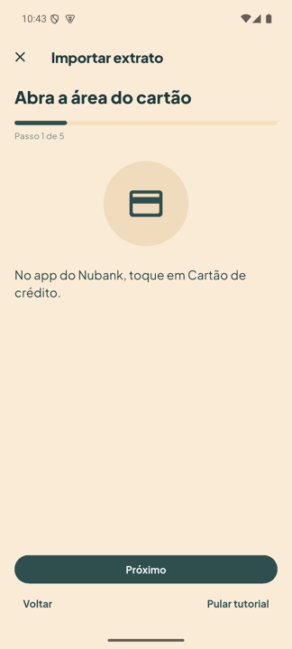 |
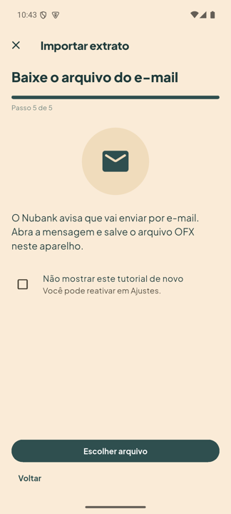 |
O que o Trokim faz com esses arquivos:
| Situação | Tratamento |
|---|---|
| Pagamento da fatura, resgate/aplicação, valor adicionado por cartão | Ficam fora dos totais (não são receita nem despesa), sem contagem dobrada com a fatura |
| Estorno | Abate a despesa, em vez de virar receita |
| Pix | Só o nome e o tipo (pessoa ou empresa) aparecem; CPF, banco, agência e conta são descartados |
Parcela 3/10 |
Vira parcela 3 de 10 |
| Reenviar o mesmo arquivo | Não altera os totais (deduplicação pelo identificador do banco) |
Depois da importação, o Resumo ganha Onde você mais gastou (maiores estabelecimentos, com Pix para pessoas agrupados e sem nomes) e o aviso de quantas movimentações ficaram fora dos totais. Tudo vem calculado pela API.
| Resumo da importação | Resumo com estabelecimentos |
|---|---|
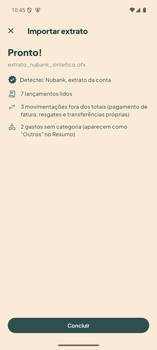 |
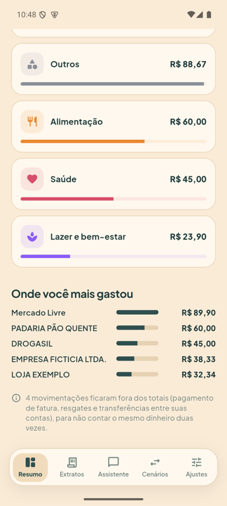 |
A resposta de POST /v1/transactions/upload informa institution, kind (cartao ou
conta), by_nature, uncategorized_count e ledger_balance (saldo declarado no arquivo, só
para consulta). Arquivos de exemplo sintéticos, no mesmo formato, saem de
python research/synthetic_data/generate_nubank_datasets.py.
8.3. Várias contas, detecção e conciliação¶
O OFX não diz se a conta é pessoal ou da empresa. Antes de importar, o app pede à API uma análise
do arquivo (POST /v1/transactions/inspect, que não grava nada): banco, tipo, período e dono
provável. Quando a API não consegue decidir, o app pergunta uma vez e lembra; quando o arquivo
parece estar no lugar errado (pessoal × Empresas, conta × cartão ou já importado noutra conta), ele
avisa e deixa escolher entre importar mesmo assim ou trocar o arquivo.
- Nubank Empresas: o arquivo que baixa direto no celular é sempre PDF; o OFX só vem por e-mail, e o tutorial avisa disso.
- Banco do Brasil, cartão Ourocard: a fatura só existe em PDF. O Trokim lê o sinal
invertido do banco, as parcelas
PARC NN/MM, as categorias do próprio banco e o final do cartão, e confere a soma dos lançamentos com o total da fatura. - Banco do Brasil, conta corrente: extrato em OFX (tipo "Money 2000+"), onde o campo
NAMEé o tipo do lançamento eMEMOa contraparte. - PicPay e Mercado Pago: ambos validados com faturas e extratos em PDF gerados a partir do fluxo real de exportação nos aplicativos.
- Inter, C6 Bank e Itaú: perfis experimentais gerados a partir dos manuais oficiais de ajuda, combinando extratos de conta em OFX e faturas de cartão de crédito em PDF.
Na aba Extratos, a seção Contas lista cada conta e cartão com o dono, que pode ser trocado a qualquer momento.
| Banco | Dono da conta | Fatura do BB |
|---|---|---|
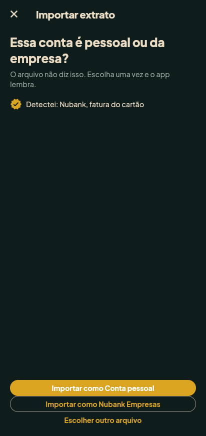 |
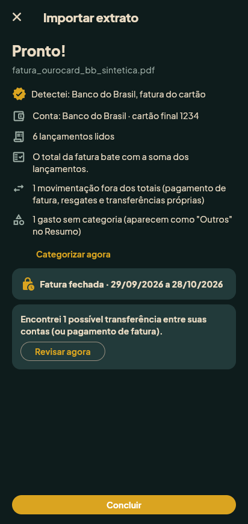 |
8.4. Fatura aberta, fechada e extrato parcial¶
O período sai do próprio arquivo. Uma fatura baixada antes de fechar fica aberta e só traz os lançamentos até aquele dia; o resumo da importação pergunta "Ela já fechou?" e permite Configurar período. Reimportar o arquivo do mesmo período substitui os lançamentos dele, sem somar de novo ("Atualizei o arquivo deste período"). Enquanto houver arquivo aberto ou um mês sem arquivo, o Resumo e Extratos mostram o aviso Valores parciais; no Resumo, o aviso segue o filtro de dono. Tocar na situação de um arquivo em Extratos abre a folha para marcá-lo como fechado (ou reabri-lo) e ajustar o período.
| Fatura aberta | Extratos |
|---|---|
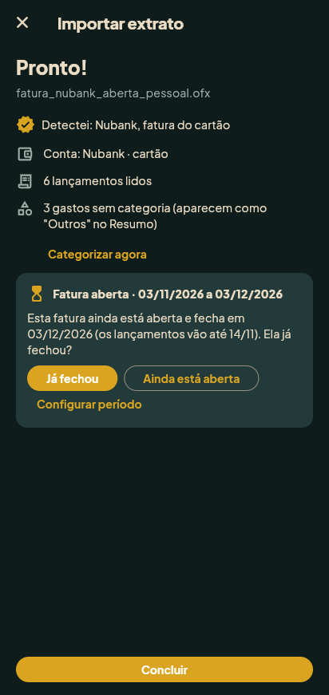 |
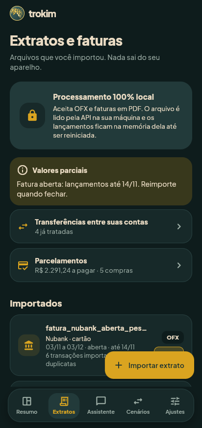 |
8.5. Transferências entre suas contas¶
O Pix da conta pessoal para a conta da empresa é saída numa conta e entrada na outra: não é gasto nem receita. O Trokim tira esse dinheiro dos totais assim:
- Reconhecida sozinha: o Pix cita a conta de destino e ela é uma conta que você importou. A transferência aparece uma vez, com as duas pontas.
- Para confirmar: sem a conta no texto, o app sugere pares de mesmo valor e data próxima; Confirmar tira dos totais e Não são descarta a sugestão.
- Pagamento de fatura de outro banco: o Pix que paga a fatura do BB a partir do Nubank vira pagamento de fatura, e a fatura não conta duas vezes.
- Desfazer devolve o valor aos totais.
8.6. Parcelamentos¶
A mesma compra parcelada é reconhecida entre faturas. A tela Parcelamentos (atalho em Extratos e card no Resumo) mostra quanto ainda falta pagar, a parcela atual de cada compra e quanto já está comprometido em cada um dos próximos meses.
| Transferências | Parcelamentos |
|---|---|
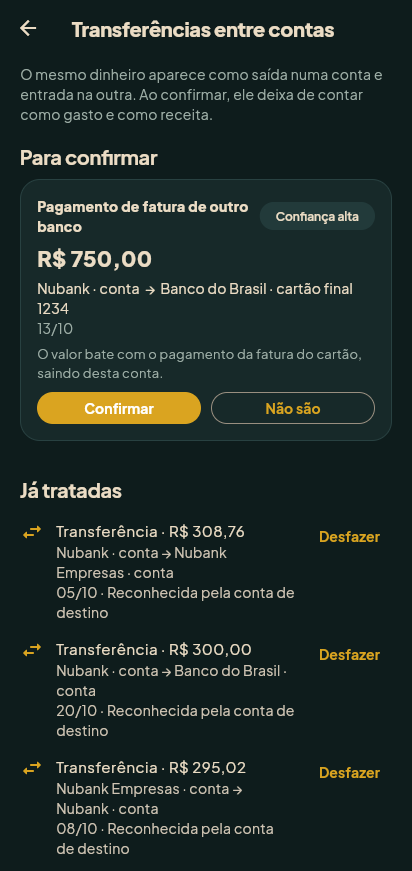 |
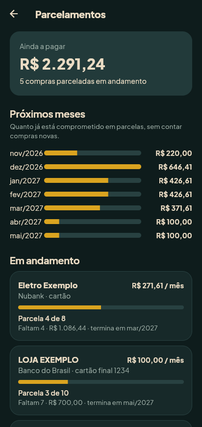 |
8.7. Gastos ou caixa, por dono¶
O Resumo tem dois filtros:
- Tudo, Pessoal, Empresas: aparece quando há contas de mais de um dono.
- Gastos × Caixa: em Gastos (competência), a compra do cartão conta na data da compra e pagar a fatura não conta de novo. Em Caixa, só conta o que entrou e saiu das contas: o pagamento da fatura aparece no lugar das compras.
A seção Por conta mostra entradas e saídas de cada conta. Os números vêm prontos da API
(GET /v1/transactions/summary?owner=…&view=…).
8.8. Corrigir categorias¶
Gastos que as regras locais não reconhecem ficam em Outros. Toque em qualquer categoria do
Resumo, ou em Categorizar agora no resumo da importação, para abrir Categorias dos gastos.
Ao escolher a categoria de um gasto, a opção Usar para tudo de … (ligada por padrão) aplica a
escolha a todos os lançamentos do mesmo estabelecimento e aos próximos arquivos. Desligada, muda só
aquele lançamento. Pagamento de fatura, investimentos e transferências entre suas contas não têm
categoria. A LLM não participa: a regra é sua e fica na API local
(PATCH /v1/transactions/{uid}/category, GET e DELETE /v1/transactions/category-rules).
Antes de cair em Outros, a API tenta, nesta ordem: as regras por palavra (marcas e termos no formato de vários bancos e adquirentes, inclusive Impostos e taxas para DARF, DAS, IPVA e IPTU), o dicionário de redes gerado dos dados abertos do CNPJ e, quando o banco traz o CNPJ do recebedor (Pix do Nubank), a atividade econômica (CNAE) da empresa. As convenções e as medições estão em Categorias.
O índice CNPJ → categoria vem no repositório, comprimido (14 MB), e é consultado só na sua
máquina. make build o descomprime em api/data/cnpj/; a API também faz isso sozinha no
primeiro uso. Para atualizar com o mês mais recente da Receita Federal:
make cnpj-atualizar # mostra o aviso e pede para digitar SIM
make cnpj-atualizar CONFIRMAR=sim # sem perguntar (CI, scripts)
make cnpj-atualizar MANTER_DOWNLOAD=1 MES=2026-11 CNPJ_BASE=/outro/disco
Antes de começar, ele mostra quanto vai baixar (cerca de 5 GB), o espaço livre no disco, o tempo
esperado (de 1 a 3 horas de download e cerca de 40 minutos de geração), a memória (até 1,5 GB) e
os arquivos versionados que vai substituir. No fim, apaga os arquivos baixados. Se o índice já é do
mês mais recente, não faz nada. Depois, confira com git diff --stat api/app/data, rode
make test e registre o mês na ADR 0020.
| Resumo com filtros | Gastos sem categoria | Escolha da categoria |
|---|---|---|
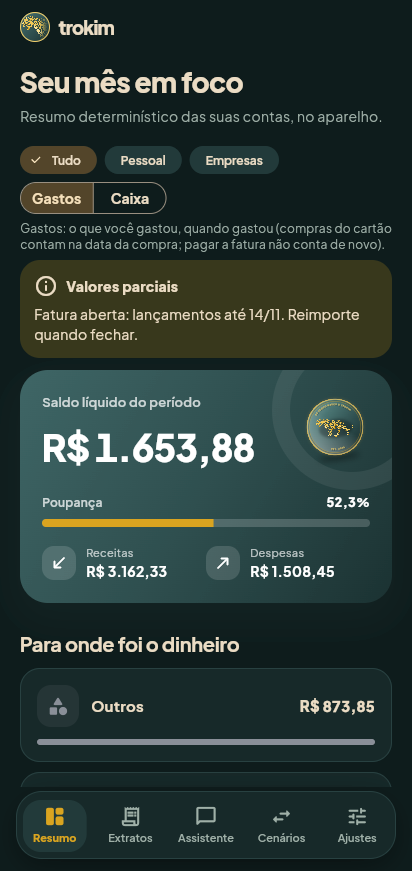 |
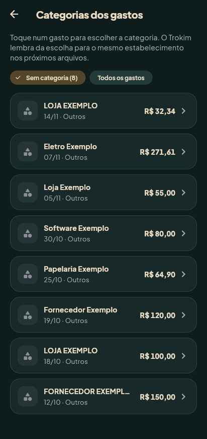 |
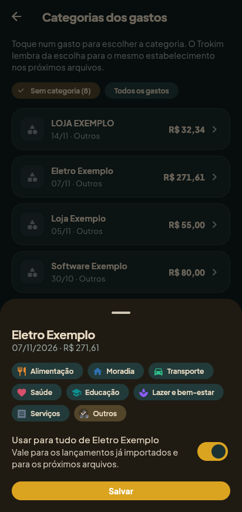 |
8.9. Receber o arquivo por "Compartilhar" (Android)¶
No app do banco, no e-mail ou no gerenciador de arquivos, toque em Compartilhar (ou Abrir
com) e escolha o Trokim. O app abre a aba Extratos e vai direto para a leitura do arquivo, sem
passar pelo seletor. Vale para .ofx e .pdf; o arquivo é lido no aparelho e enviado só para a sua
API local.
As capturas desta seção usam o cenário sintético completo
(python research/synthetic_data/generate_nubank_datasets.py), com dados fictícios.